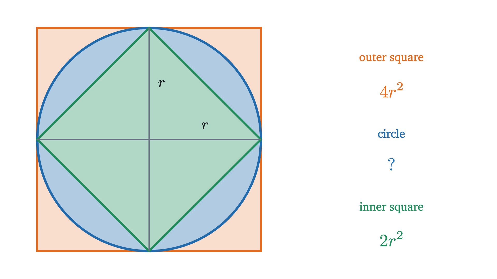
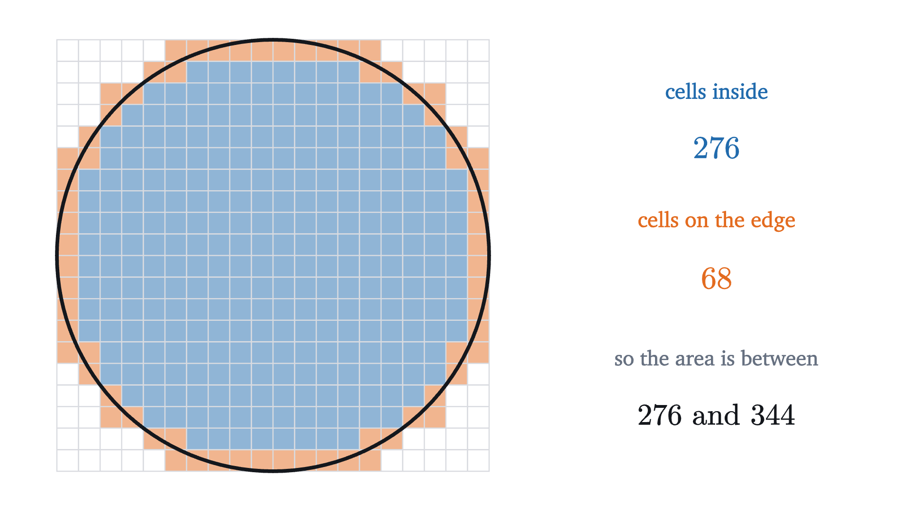
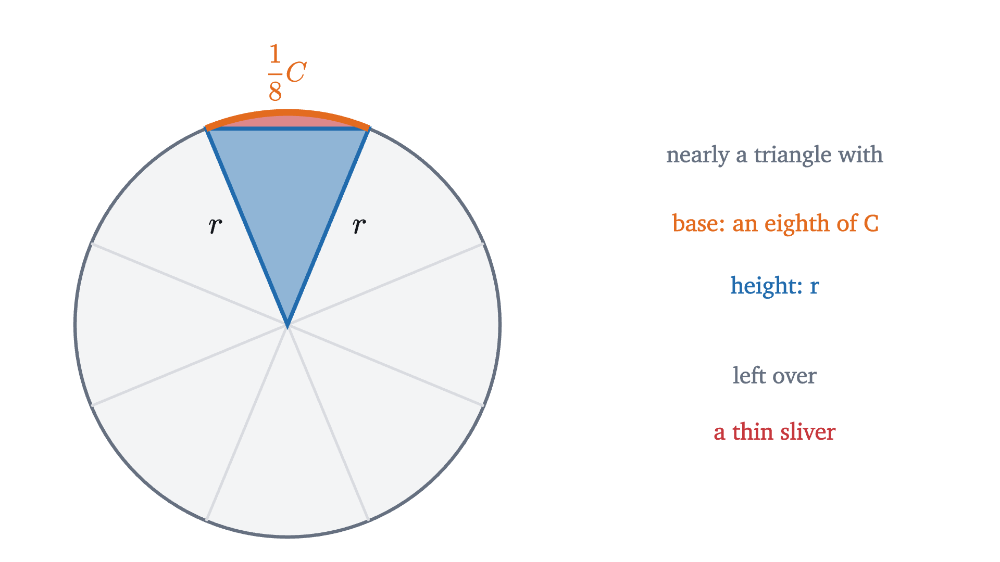
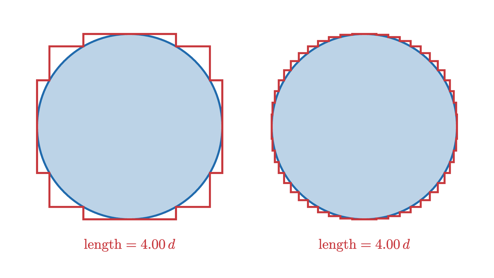

Why the area of a circle is πr²
The number π is defined by the distance around a circle. Cutting the circle into sectors, and then into rings, shows why the same π gives its area.
Wrap a string once around a circular plate, then lay the string straight and measure it against the plate’s width. It is a bit more than three widths long, and it is the same number of widths for a coin as for a cartwheel. That number is called π. So the formula for the distance around a circle of radius $r$, which is $2\pi r$, needs no proof. It is what π means.
The formula for the area inside the circle, $\pi r^2$, is another matter. Area is measured by covering a region with unit squares, and nothing about a string wrapped around the rim says how many squares fit inside. Yet the same number π appears. Why should a number that was defined by a length also govern an area? And why does the area go with $r^2$, where the length went with $r$?
What π is
Let’s put the definition down carefully, since everything rests on it.
A circle with center $O$ and radius $r$ is the set of points in the plane at distance exactly $r$ from $O$. Its diameter is $d = 2r$, the distance across through the center. Its circumference $C$ is the distance around it.
The definition quietly assumes that $C/d$ is the same for every circle. That is true because any two circles are scaled copies of each other, and scaling a figure multiplies all of its lengths, straight or curved, by the same factor. The lesson on similar triangles looks at scaling in detail. Here I will take it as known.
One more point needs care. “The distance around” a curved line needs a meaning, because a ruler only measures straight segments. The standard meaning is this: mark evenly spaced points around the circle and join them in order by straight segments, making a polygon inside the circle. Each side is a shortcut across a piece of the curve, so the perimeter falls short of the distance around, and as the points are packed more closely the perimeters approach a limiting value without ever exceeding it. That limiting value is $C$. (That the perimeters do settle on one value is proved in calculus, and I take it as known.) We will use exactly this later.
How big should the area be?
Before looking for a formula, it helps to know roughly what answer to expect. A circle of radius $r$ fits snugly inside a square of side $2r$, and it contains a smaller square standing on its corner, whose corners touch the circle.

The outer square has area $(2r)^2 = 4r^2$. The two diameters drawn in the figure cut it into four squares of side $r$. They cut the inner square into four right triangles, each with both legs equal to $r$, so each is half of an $r$-by-$r$ square, and the inner square has area $4 \cdot \frac{1}{2}r^2 = 2r^2$. The circle lies between the two, so
This already answers the question about $r^2$. The area is some number between 2 and 4, times $r^2$, and that number is the same for every circle, because all circles are scaled copies of one another and scaling a figure by a factor $k$ multiplies its area by $k^2$ (also shown in the lesson on similar triangles). The question is what the number is. Halfway between 2 and 4 is 3, which is suspiciously close to π, but “close” is all we can say so far.
We can tighten the bounds by counting. Draw a circle of radius 10 on squared paper and sort the cells into those that lie completely inside the circle and those that the circle passes through.

There are 276 cells inside and 68 more on the edge, so the area is between 276 and 344 square units. Here $r^2 = 100$, so the mystery number is between 2.76 and 3.44. The value $\pi \approx 3.14$ is comfortably inside that range.
Counting will never do better than a range, though. However fine the grid, there are always cells cut by the edge, because a circle has no straight parts for the cells to line up with. To get an exact answer we need to turn the circle into a shape with straight sides, whose area we already know how to compute.
Cutting the circle into sectors
Which cuts should we make? We want pieces that can be rearranged, and whose curved edges do as little damage as possible. The only length we know on a circle, apart from $r$, is the circumference, so the pieces should keep the circumference in view. Cuts along radii do that. They divide the circle into equal slices, like a pizza, called sectors. Each sector has two straight sides of length $r$ and one curved side, which is its share of the circumference.

A sector is not a triangle, because one of its sides is curved. But it is nearly one. Its two straight sides are radii, and the curved side bulges only slightly beyond the straight line joining its ends. If we pretend the sector is a triangle whose base is its curved side and whose height is $r$, we make a small error, the sliver in the figure, and the error shrinks as the sectors get narrower.
Pause and try
Suppose the circle is cut into $n$ equal sectors and each is treated as a triangle with base equal to its share of the circumference, $C/n$, and height $r$. What total area does that give for the circle? Then substitute $C = 2\pi r$.
Show answerHide answer
Each triangle has area $\frac{1}{2} \cdot \frac{C}{n} \cdot r$. There are $n$ of them, so the total is $n \cdot \frac{1}{2} \cdot \frac{C}{n} \cdot r = \frac{1}{2} C r$. The $n$ cancels, so the estimate does not depend on how many sectors there are. With $C = 2\pi r$ it becomes $\frac{1}{2} \cdot 2\pi r \cdot r = \pi r^2$.
So the formula appears at once, and we can see where its two ingredients come from. The π comes in through the circumference, which supplies the bases of the triangles. The second factor of $r$ is their height.
That calculation treated curved pieces as straight, so it is a strong hint and no more. There are two things to do. One is to see the estimate as a picture, and the other is to deal honestly with the slivers.
Rearranging the sectors
For the picture, stand the sectors in a row, pointing alternately up and down so that they interlock.
The pieces are only moved, never stretched, so at every stage the row has exactly the area of the circle. What changes is its shape. The bottom edge of the row is made of the curved sides of the sectors that point down, which is half of them, so its length along the bumps is half the circumference, $\frac{1}{2}C = \pi r$. The top edge is the other half. The slanted ends are radii, so the row is about $r$ tall. As the number of sectors grows, the bumps flatten and the ends stand up straighter, and the readouts in the figure show the width and height settling toward $\pi r$ and $r$.
A rectangle of width $\pi r$ and height $r$ has area $\pi r \cdot r = \pi r^2$.
You might object that the row never becomes a rectangle. With 64 sectors it has 32 small bumps along each edge, and with a million sectors it would have half a million. That is correct, and it is the same objection as the slivers. The picture shows what the answer must be. It does not yet show that no small discrepancy survives.
Trapping the area between two polygons
To close the gap we need to control the slivers, and the way to do that is to trap the circle between two shapes with straight sides whose areas we can compute exactly. We did this once already, with the two squares. Squares have only 4 sides, and the idea is to use polygons with more.
Mark $n$ equally spaced points on the circle and join them in order. This gives a regular polygon inscribed in the circle. It is made of $n$ identical triangles with their tips at the center $O$: these are the sectors with their slivers cut off. Enlarging that polygon from the center until the midpoints of its sides touch the circle gives a regular polygon circumscribed about the circle. The circle lies between them.
Here are the numbers from that animation for a few values of $n$, in units of $r^2$.
| sides $n$ | inner polygon | outer polygon |
|---|---|---|
| 4 | 2.0000 | 4.0000 |
| 8 | 2.8284 | 3.3137 |
| 16 | 3.0615 | 3.1826 |
| 64 | 3.1365 | 3.1441 |
| 256 | 3.1413 | 3.1418 |
The first row is the two squares. Each later row is a tighter trap, and by 256 sides the area of the circle is pinned between $3.1413\,r^2$ and $3.1418\,r^2$. The two columns are plainly heading for the same number. To find out what it is we need formulas for the two areas.
Pause and try
The inner polygon is made of $n$ identical triangles with their tips at $O$. Let $s$ be the length of one side of the polygon and $h$ the height of one of these triangles, measured from $O$ to the middle of the side. Write the area of the inner polygon in terms of its perimeter $p = ns$ and $h$. Then use the Pythagorean theorem to relate $h$, $s$ and $r$.
Show answerHide answer
Each triangle has base $s$ and height $h$, so its area is $\frac{1}{2}sh$, and the polygon has area $n \cdot \frac{1}{2}sh = \frac{1}{2}ph$. For the second part, the height from $O$ splits the triangle into two right triangles, each with hypotenuse $r$ (a radius) and legs $h$ and $s/2$. So $h^2 + (s/2)^2 = r^2$. When the side $s$ is short, $h$ is very nearly $r$.
The answer to that exercise has the same form as our estimate $\frac{1}{2}Cr$, with the perimeter of the polygon in place of the circumference and $h$ in place of $r$. That is the whole mechanism, and we can now state the result and prove it.
Each part of the proof is something from the pictures made exact. The triangles of the inscribed polygon are the sectors without their slivers, and the triangles of the circumscribed polygon are the sectors with a little extra. The slivers are whatever lies between, and the two bounds say that their total area is less than the gap between the bounds, which vanishes. The use of the Pythagorean theorem is the precise form of “the row is about $r$ tall”.
Some things were used without proof. The argument leans on the idea of quantities that “close in on” a value, which is the idea of a limit, and a full treatment defines it exactly and checks the rules used here, such as the fact that if $p_n$ approaches $C$ and $h_n$ approaches $r$ then $p_n h_n$ approaches $Cr$. It also assumes that the perimeters $p_n$ settle on a value $C$ in the first place, that a region with a curved edge has a definite area at all, that a shape contained in another has the smaller area, and that enlarging a figure from a point multiplies all its lengths by the same factor. The first three are settled in calculus and the last belongs to the study of similar figures. The geometric idea, trapping the circle between inscribed and circumscribed polygons, is Archimedes’, from his Measurement of a Circle, written in the third century BC.
A second way to cut: rings
A different way of cutting leads to the same formula. Sectors came from cutting along radii. The other natural way to cut a circle is into thin rings around the center, like the rings of a tree.
A thin ring at distance $x$ from the center has length about $2\pi x$, the circumference of a circle of radius $x$. Cut it and straighten it out, and it becomes a thin strip of that length. Do this to every ring and stack the strips in order.
Pause and try
Before watching the animation, predict the shape of the stack. The ring at distance $x$ from the center becomes a strip of length $2\pi x$. How long are the strips from the very center and from the outer edge, how tall is the whole stack, and what is its area?
Show answerHide answer
The strip from the center has length close to 0 and the one from the edge has length $2\pi r$. In between, the length $2\pi x$ grows in proportion to $x$, so the stack widens at a steady rate: it is a triangle. Its base is $2\pi r$ and its height is the combined thickness of the rings, $r$. Its area is $\frac{1}{2} \cdot 2\pi r \cdot r = \pi r^2$.
The innermost rings are short and the outermost is the longest, with length $2\pi r$. Because the length of a ring, $2\pi x$, is proportional to its distance $x$ from the center, the ends of the strips line up along two straight lines, and the stack is a triangle. Its base is the outer circumference $2\pi r$, and its height is the total thickness of all the rings, which is $r$. The area of a triangle is half the base times the height:
This is again $\frac{1}{2}Cr$: half the circumference times the radius. With sectors, half the circumference became the width of a rectangle of height $r$. With rings, the whole circumference became the base of a triangle of height $r$. Two different dissections lead to the same expression.
As a proof, the ring picture is a sketch, at the same stage the sector picture was in before we trapped the circle between polygons. A straightened ring is not exactly a rectangular strip, since its inner edge is slightly shorter than its outer edge, and the stack has a staircase edge that only approximates the sloping side of the triangle. Both discrepancies shrink as the rings get thinner. Making that exact is one of the first applications of integral calculus, and it is the standard way the formula is derived there.
Using the formula
Where the formula stops working
The theorem is about circles in a flat plane, and flatness was used when we took for granted that the circumference is proportional to the radius. On a curved surface it is not. Take the circle on a globe consisting of all points at a fixed walking distance from the north pole, and let that distance be a quarter of the way around the globe, so that the circle is the equator. If the globe has radius $R$, the walking radius is $r = \frac{1}{2}\pi R$ and the region enclosed is the northern hemisphere, with area $2\pi R^2 \approx 6.28\,R^2$. The flat formula $\pi r^2$ would predict $\frac{1}{4}\pi^3 R^2 \approx 7.75\,R^2$. A circle on a sphere encloses less area than a flat circle of the same radius, and its circumference is shorter too.
Looking back
The difficulty was that area is defined with squares and a circle has no straight sides. We got past it by cutting the circle into many pieces, each of which is nearly a triangle, and adding up. The formula showed itself immediately as $\frac{1}{2}Cr$. The real work was in showing that “nearly” costs nothing, and for that we trapped the circle between two polygons and watched the trap close.
This pattern, in which a curved shape is cut into many nearly straight pieces, the pieces are added, and the error is shown to vanish as the pieces shrink, is the central method of integral calculus. Archimedes used it for the circle some two thousand years before calculus existed.
Check yourself
A circular pond has a circumference of $20\pi$ meters. What is its area?
Problems
Problem 1
Find the area of a circle of radius 5.
Show solutionHide solution
$A = \pi \cdot 5^2 = 25\pi \approx 78.54$. Check: it lies between $2r^2 = 50$ and $4r^2 = 100$.
Problem 2
A circular table is 14 units across. Find its area.
Show solutionHide solution
“Across” is the diameter, so $r = 7$ and $A = \pi \cdot 7^2 = 49\pi \approx 153.94$ square units.
Problem 3
A circle has area 50. Find its radius.
Show solutionHide solution
From $\pi r^2 = 50$ we get $r^2 = 50/\pi \approx 15.915$, so $r \approx 3.99$. Check: $\pi \cdot 3.99^2 \approx 3.1416 \cdot 15.92 \approx 50.0$.
Problem 4
Which is more pizza: one pizza 16 inches across, or two pizzas each 11 inches across?
Show solutionHide solution
The radii are 8 and 5.5 inches. The large pizza has area $\pi \cdot 8^2 = 64\pi \approx 201.1$ square inches. Each small one has area $\pi \cdot 5.5^2 = 30.25\pi$, so two have $60.5\pi \approx 190.1$ square inches. The single large pizza is more, by $3.5\pi \approx 11$ square inches, even though the two small ones have a combined width of 22 inches. Area goes with the square of the width.
Problem 5
A slice of pie is a sector of a circle of radius 6 with an angle of 60° at its tip. Find its area, and explain why the method is valid.
Show solutionHide solution
A full turn is 360°, so six slices of 60° make up the whole circle. They are identical, since each can be rotated onto the next, so each has one sixth of the total area: $\frac{1}{6} \cdot \pi \cdot 6^2 = 6\pi \approx 18.85$. In general a sector with angle $\theta$ degrees has area $\frac{\theta}{360} \pi r^2$. For angles that divide 360° evenly this is the same argument, and for other angles it follows by cutting the circle into very fine equal sectors and counting how many fall within the angle.
Problem 6
A circle is drawn inside a square so that it touches all four sides. What fraction of the square does it cover? Does the answer depend on the size of the square?
Show solutionHide solution
If the circle has radius $r$, the square has side $2r$ and area $4r^2$, and the circle has area $\pi r^2$. The fraction is $\frac{\pi r^2}{4r^2} = \frac{\pi}{4} \approx 0.785$, about 78.5%. The $r^2$ cancels, so the fraction is the same for every size.
Problem 7
A polygon (not necessarily regular) is circumscribed about a circle of radius $r$: every one of its sides touches the circle. Show that its area is $\frac{1}{2}Pr$, where $P$ is its perimeter. You may use the fact that a radius drawn to the point where a side touches the circle is perpendicular to that side.
Show solutionHide solution
Join the center $O$ to every corner of the polygon. This cuts the polygon into triangles, one for each side, each with its tip at $O$ and one side of the polygon as its base. The height of such a triangle is the perpendicular distance from $O$ to that side. The radius to the point of contact is perpendicular to the side, so that distance is $r$. A triangle with base $b$ therefore has area $\frac{1}{2}br$. Adding over all the sides, with bases $b_1, b_2, \dots, b_k$,
So every polygon wrapped around a circle satisfies the same relation as the circle itself, area equals half the perimeter times $r$. The circle’s formula $A = \frac{1}{2}Cr$ is the limiting case.

Problem 8
Here is an argument that $\pi = 4$. Draw a square around a circle of diameter $d$. Its perimeter is $4d$. Fold each corner inward into a step that touches the circle, as in the figure above. The staircase still has length $4d$, because every horizontal piece and every vertical piece is still there, only moved. Repeat with finer and finer steps. The staircases hug the circle more and more closely, so in the end the circle has length $4d$, and $\pi = C/d = 4$. (a) What is wrong with this argument? (b) Our proof of the area formula also used shapes that close in on a circle. Why is it not open to the same objection?
Show solutionHide solution
(a) Every staircase does have length $4d$, and the staircases do get close to the circle in the sense that every point of a staircase is near the circle. What fails is the unstated step “if curves get close to a curve, their lengths get close to its length”. That is false. A staircase stays jagged at every scale: it is always made of horizontal and vertical pieces, so it never runs in the direction of the circle, and a wiggly path can stay very near a smooth one while being much longer. Length depends on direction as well as position. This is why the circumference is defined using inscribed polygons, whose sides join points of the circle directly.
(b) The area proof never claimed that nearby shapes have nearly equal measures. It used containment: the inscribed polygon is inside the circle and the circle is inside the circumscribed polygon, and a shape contained in another has the smaller area. That gives true inequalities for every $n$, and the conclusion came from both bounds approaching the same value. Containment controls area. It does not control length, since a region can sit inside another and have a much longer boundary, as the staircases show. Indeed the staircase regions do give the right area: they contain the circle and shrink onto it, and their areas approach $\pi r^2$.